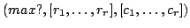
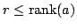
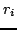
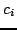
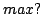

Usage
invertibleSubmatrix(M)(a)
Signature
invertibleSubmatrix: (M:MatrixCategory %) M
where
AZ == Array MachineInteger
| Parameter | Type | Description |
|---|---|---|
| M | MatrixCategory % | A matrix type |
| a | M | A matrix |
Returns
Returns  where  and the submatrix offormed by the intersections of the rows  and  is always invertible. If  is true, then
is exactly the rank of
Remarks
See Also
maxInvertibleSubmatrix